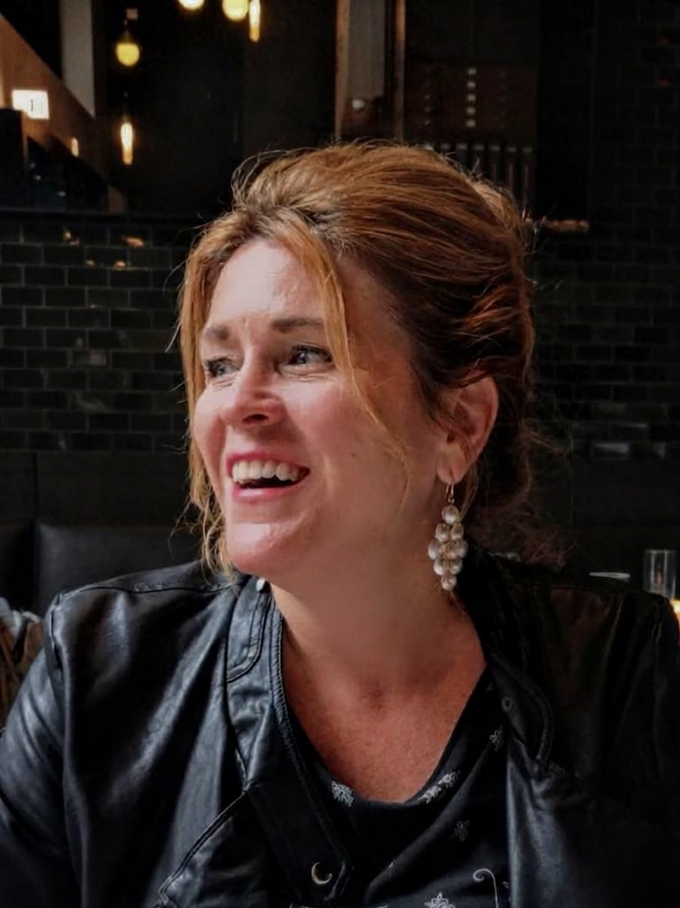

Deb doesn't rush you toward a tidy interpretation or a quick breakthrough. She stays close to what's actually here — your dream fragments, the image that won't leave you alone, the poem you've been carrying, the repeating dilemma — until it starts speaking in a way you can feel. This isn't self-optimization. It's an unhurried companionship with your own psyche, held in a steady relational container that makes room for what's been packed away.
Deb's practice is her own inner excavation made visible. The language she uses — threshold, ensouled, sovereign — didn't come from a branding exercise. It came from years of doing this work herself and trusting that the people who need it will recognize it. Her brand is a direct transmission of her methodology: you meet the container before you meet the offer.
1:1 clients — People who are therapy-literate and spiritually attuned, often carrying a great deal for others. You can name your patterns but still feel something essential is unclaimed. You're in a liminal season and want your life to feel ensouled again, not just managed. You're open to working with dreams, images, and creative practice as a way in.
Referral partners — Therapists, somatic practitioners, spiritual directors, and trauma-informed clinicians who work with depth-oriented clients and want a trusted coaching complement. Deb works alongside clinical care.